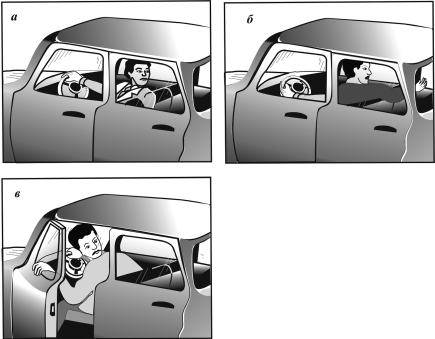
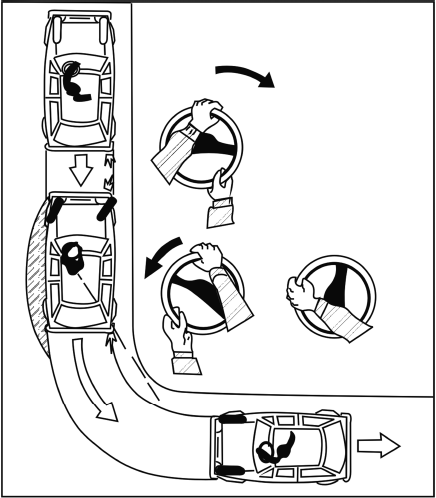

Движение задним ходом.
Движение задним ходом возможно лишь при небольшой скорости, но и в этих случаях необходимо остерегаться наездов и столкновений. Чаще всего аварийная ситуация возникает из-за неумения водителя заметить представляющий опасность объект. Поэтому прежде чем начать движение задним ходом, следует выйти из автомобиля, обойти его вокруг, чтобы убедиться, что путь свободен.
Начинающим водителям движение задним ходом рекомендуется осваивать по прямой, без резких отклонений в стороны с полувыжатым сцеплением. Заднюю передачу включать только после того, как автомобиль остановится.
При движении задним ходом следует выполнить следующие действия. В начале маневра нужно посмотреть в зеркало заднего вида; затем выжать педаль сцепления до упора, то есть выключить сцепление; включить передачу «задний ход»; потянуть на себя рычаг стояночного тормоза и отпустить его на треть хода; плавно отпустить педаль сцепления, одновременно нажимая на педаль управления подачей топлива, и полностью отпустить рычаг стояночного тормоза; проследить за траекторией движения автомобиля в зеркало заднего вида; скорость движения регулировать путем уменьшения нажатия на педаль подачи топлива или выжимая ее на половину или треть хода педали сцепления. Для выполнения маневра необходимо отработать положение головы и корпуса, усвоить навыки управления одной рукой: при наблюдении за дорогой через левое плечо – правой, через правое плечо – левой. Если водитель наблюдает за обстановкой сзади через приоткрытую дверцу, левая рука должна надежно удерживать ее, а правая манипулировать рулевым колесом. Желая повернуть автомобиль налево, рулевое колесо вращают в левую сторону, для поворота направо – в правую (рис. 14).

Рис. 14. Положение головы и корпуса водителя при движении задним ходом: а – взгляд назад с поворотом направо; б – взгляд назад с поворотом направо; в – взгляд назад через приоткрытую переднюю дверцу
При повороте задним ходом необходимо внимательно следить за прохождением заднего колеса (при повороте передним ходом контролируют положение заднего колеса). При повороте задним ходом передняя часть автомобиля движется по большему радиусу (заштрихованная зона на рисунке 15. Чем больше передний свес автомобиля, тем больше радиус. Так что, если переднее колесо и впишется в поворот, это еще не значит, что крыло автомобиля не заденет препятствие. Обстановку следует контролировать быстрым переводом взгляда во всех направлениях.

Рис. 15. Поворот задним ходом
Перед тем, как подавать задним ходом прицеп, необходимо также обойти его сзади и убедиться в безопасности маневра. Чтобы повернуть прицеп влево, рулевое колесо следует поворачивать тоже влево и наоборот. После того как прицеп двинулся в нужном направлении, вращайте рулевое колесо в противопо ложную сторону. За обстановкой следует следить, повернувшись через правое плечо.